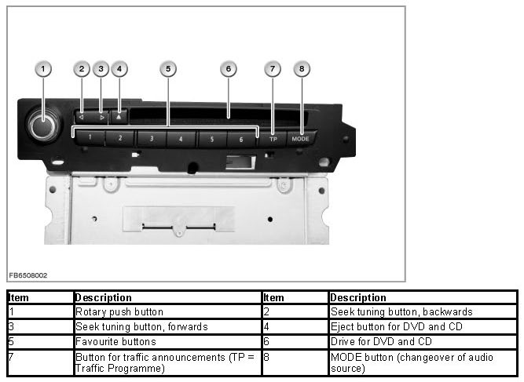
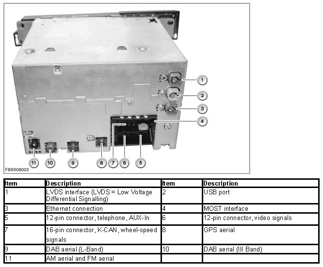
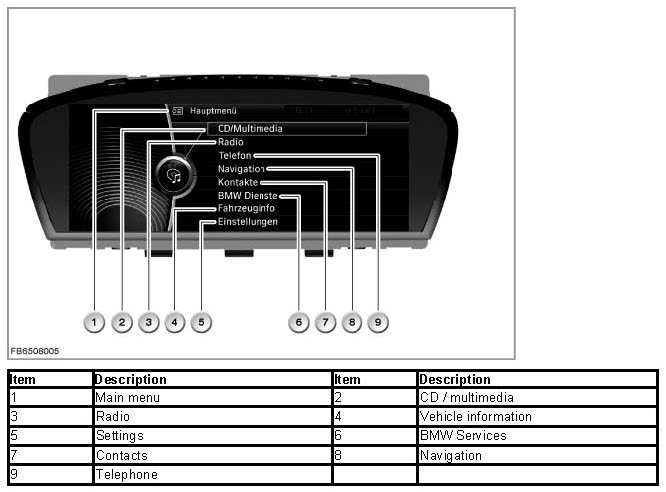
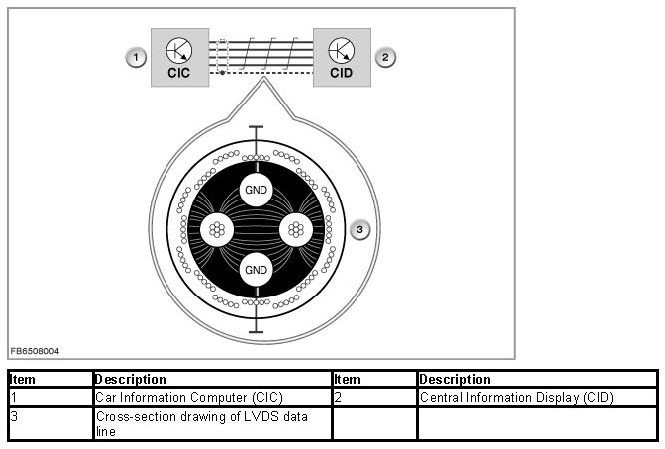
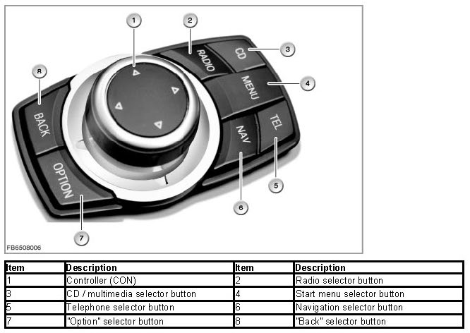
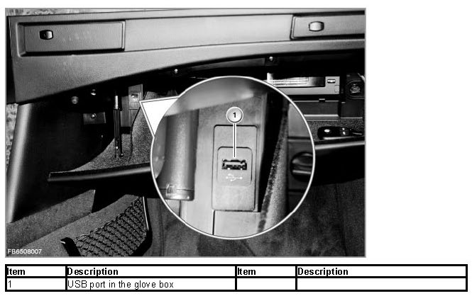
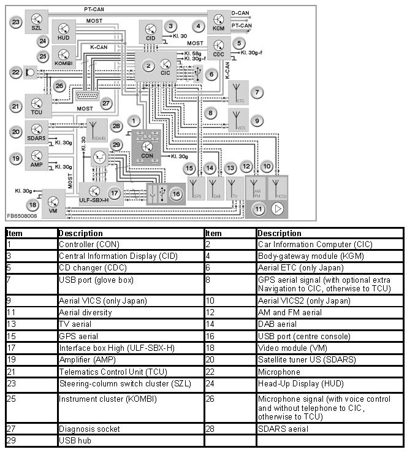

Car Information Computer
Car Information Computer
Car Information Computer
The Car Information Computer (CIC) is an enhancement of the Car Communication Computer (CCC). The Car Information Computer will be deployed for the first time as of 03/2008 in a special model series in the E60 and E61. Later, the CIC will also be used in the other model series.
The Car Information Computer is the head unit in the MOST framework.
The essential new features for the CIC are:
- Extended functions for existing systems, e.g. navigation (see also Owner's Handbook)
- Additional functions, e.g. central database for address data
- Additional hardware, e.g. hard disk (80 GB) or USB port
- Changed hardware e.g.:
- LVDS data line to the Central Information Display (CID) as two-wire connection
- 1 Drive for DVD and CD
- Changed display and operating concept for iDrive via:
- New layout of the user interface on the CID
- New controller with 7 fixed selector buttons
- Reduction of the virtual control units in the CIC
Changes to the software and hardware have extended the diagnosis for the Car Information Computer accordingly.
Brief description of components
The following components are described:
- Car Information Computer
- Central Information Display with LVDS interface
- Controller
- USB port
Car Information Computer
The Car Information Computer (CIC) has 6 free programmable favorite buttons.

In principle, the structure of the CIC corresponds to that of a personal computer. In a similar way to a PC, the CIC contains:
- Processor
- Main memory
- Hard disk
- Fan
The extended functions means that the plug connections on the back of the Car Information Computers have also changed.The number of plug connections depends on the optional extras involved: e.g. DAB.

The following other components are integrated in the Car Information Computer (CIC):
- Navigation computer, GPS receiver as well as yaw rate sensor
The GPS receiver receives e.g. the following data from the GPS aerial:date, time and locations of the GPS satellites. The navigation system uses the data from the GPS receiver to calculate the vehicle position.
The yaw rate sensor delivers the data regarding a change in driving direction. This data is required for more accurate location determination, as the satellite signals cannot be received everywhere (e.g. tunnels, underground car parks).
- Three-way tuner: FM, AM and TMC
- DAB tuner
- Audio system controller and stereo amplifier
- Gateway between MOST and CAN
Central Information Computer with LVDS interface
The dimensions of the Central Information Display (CID) have not changed (8.3 inches). However, the resolution is 1280 x 480 pixels. This increases the contrast and improves legibility.
The display and operating concept for iDrive has changed. Selection in the start menu is arranged in linear form in lists (no longer star-shaped). The submenus are also placed horizontally one above the other.

With introduction of the Car Information Computer, the LVDS data line is a two-wire connection. This new LVDS data line has the following advantages:
- Higher data transfer rate
- No difference in the signal runtime between the individual lines
- Simpler and lower-cost technology
A 4-wire, screened cable is used for the two-wire connection. This solution involves lower costs, even though one of the 4 lines is not used actively.

To prevent EMC faults, the unused line is also earthed. The capacitive disruptive influences of the signals are diverted to earth. Furthermore, earthed lines form a defined potential and cannot have the same effect as aerials.
Controller
There are 7 fixed selector buttons arranged around the new controller. These selector buttons now enable selection of half of all the submenus.
The following submenus can still be selected only from the start menu:
- Contacts
- BMW Services
- Vehicle information
- Settings

When pressed, the "Back" button returns the user to the last screen displayed. The "Option" button enables other settings in the last selected submenu.
The selector buttons are used now instead of pushing the controller for a longer period in a certain direction.
USB port
There is a USB port in the glove box. The data of a USB stick (music files in the format MP3, WMA or AAC) can be imported via this USB port.
Imported USB music data is stored in a music collection. The file folders are stored with USB 1, USB 2 on the hard disk.
NOTE: No import is possible via the USB audio interface.
An import via the USB audio interface (optional extra 6FL, ULF-SBX-H) in the centre console is not possible. This interface is still only intended for playback of external audio sources.

USB sticks with the standard USB 1.1 are supported. However, the standard USB 2.0 (= high speed) is recommended.
If the USB stick has been partitioned, the files must be located on the first partition. This is the only way these files are recognized and used. The USB interface supplies the USB stick with a maximum of 500 mA.
USB hard disks, USB hubs and USB memory card readers with a number of bays cannot be read at the USB interface.
System functions
The following system functions are described:
- Car Information Computer composite system
- Additional functions on the Car Information Computer
- Personalization of settings
Car Information Computer composite system
The following illustration shows the composite system for the Car Information Computer (CIC).
The CIC is supplied with voltage via terminal 30g-f.In the Japanese version, the aerials for VICS (Vehicle Information Communications System) and ETC (Electronic Toll Collect) are also connected to the CIC.
With the Navigation optional extra, the GPS aerial is connected to the CIC.On vehicles without a telephone, the vehicle microphone (voice control) is also connected to the CIC.

NOTE: Special feature of programming
The diagnosis connector is connected to the D-CAN and via Ethernet to the CIC. The CIC is programmed with map data of the navigation as well as the audio database (Gracenote) via Ethernet. The rest is programmed via the MOST direct access point.
Additional functions on the Car Information Computer
NOTE: Please comply with instructions in Owner's Handbook.
The new functions provided by the CIC are described in detail in the Owner's Handbook.
To provide an overview, the new functions are summarized briefly.
- DVD drive functions
The Car Information Computer is equipped with a DVD drive (ROM). The drive enables playback of the following media:
- Audio CD (CD Digital Audio)
- Audio CD with files in the format MP3, WMA or AAC
- Audio DVD (only stereo track if on the data medium)
- Audio DVD with files in the format MP3, WMA or AAC
- Video DVD
In comparison with the CCC, the drive is no longer used for navigation. It might still be used to update map data.This means the drive is available for playback of audio and video sources.
- Hard disk functions
For the first time, a hard disk is used in the head unit of a BMW vehicle. The hard disk is used to load application software and as a data memory. This enables the implementation of complex graphics: e.g. 3D altitude models for navigation.
Furthermore, a database with music tracks is implemented (music collection). This provides the possibility to convert, save and play music tracks of the customer. For the voice recognition system, 3 languages are stored on the hard disk.One language is activated by coding.
For the additional functions, the approx. 80 GB of the hard disk are divided into the following functions:
- Navigation system
- Music collection
- Database audio mode (music search with Grace note)
- System administration
- Voice processing
Personalization of settings
For BMW vehicles, the personalization of functions is known as a Personal Profile . Here, individual settings are stored in the vehicle on a key-dependent basis. The settings are called up again on unlocking the vehicle.
With application of the Car Information Computer (CIC) in 03/2008, no Mobile Profile is possible.
The Car Access System (CAS) is the master control unit for the personalization.
Notes for Service department
General Information
IMPORTANT: Pay attention to electrostatic discharge.
When working on the CIC, particular attention must be paid to electrostatic discharge (ESD).
When working on electronic components of the CIC, comply with the following rules:
- The work must be performed on a conductive and earthed workbench. The additional special tool 12 7 192 is also used.
- The earthing cable is to be connected to a safe earthing point (water pipe, heating pipe, power socket earthing).
- First of all, the person doing the work puts on the wrist collar to achieve a discharge before taking parts out of the packaging.
- The electronic components are placed on the antistatic mat and also connected to the earthing cable.
NOTE: Components that can be replaced.
On the Car Information Computer (CIC), fewer components can be replaced that on the Car Communication Computer (CCC).
The following components can be replaced:
- Complete CIC
- Hard disk.
- DVD player
- Front trim
NOTE: Comply with copyright during data backup.
The "Options" submenu provides the possibility to back up the complete music collection. Here, the data must be stored on a USB stick. Use a USB stick with a memory capacity of 8 GB. This function is already displayed for 03/2008.
For legal reasons, have data backup of the music collection performed by the customer (copyright).
A data backup is only possible if the hard disk of the CIC has not been damaged and the interfaces to the CIC are still working perfectly. No recovery of music data has been agreed with the manufacturer of the CIC (Harman/Becker). This means that without a data backup the music files are irrevocably lost.
Diagnosis instructions
NOTE: Use the service function.
A service function in the BMW diagnosis system can be used to reset the settings of the Personal Profile.
Path: Service functions - Body - Car Information Computer - Restore delivery status
Diagnosis is available on the BMW diagnosis system for the following tasks:
- Aerials
- DVD drive and hard disk
- Quality test (audio test CD)
- Navigation system
- Complete CIC
- Connected devices
- Front finisher panel with all buttons
- Video system
If "noticeable symptoms" is selected, a fault pattern catalogue is available.
Programming information
The following interfaces are used to program the CIC:
- Ethernet via diagnosis connector:map data of the navigation as well as database for audio (Grace note)
- MOST direct access point:remaining data, e.g. application software
No liability can be accepted for printing or other errors. Subject to changes of a technical nature